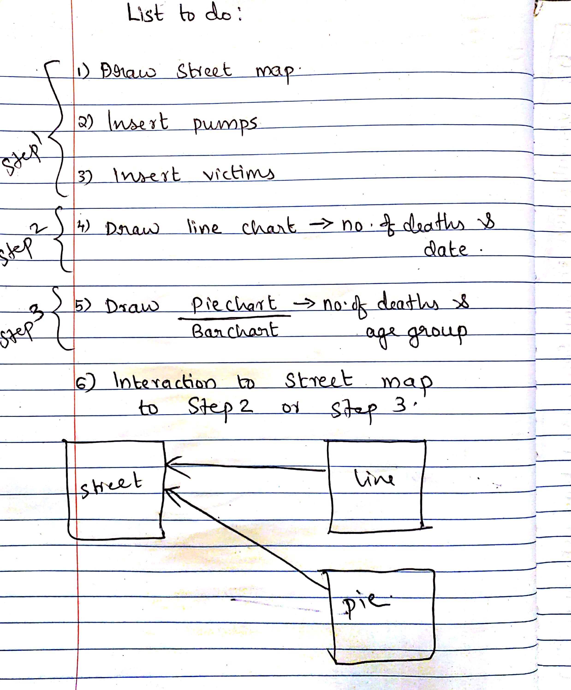
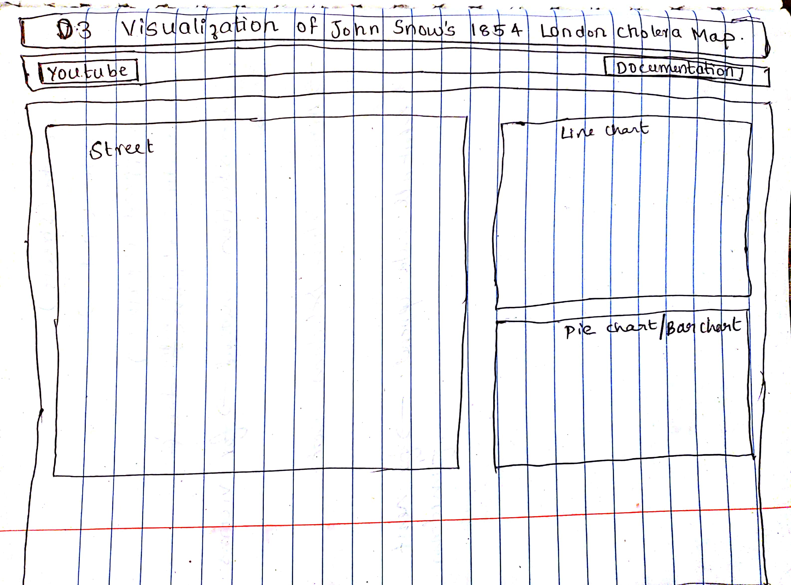

DOCUMENTATION
The London Broad Street cholera outbreak was a severe outbreak of cholera that occurred in 1854 near Broad Street in the Soho district of the City of Westminster, London, England. This outbreak, which killed 616 people, is best known for the physician John Snow's study of its causes and his hypothesis that germ-contaminated water was the source of cholera. It was the first time that anyone had established a link between contaminated water and cholera. The visualization provided compelling evidence and made the case for public health policies to improve water sanitation. The map remains one of the most remarkable and insightful visualizations ever created. In this project, I have tried to recreate Dr. John Snow's map as an interactive version using today's tools of trade, D3. I have also added additional charts to the side of the map, as well as interface elements to make the data more interactive. A line chart is created plotting the no. of deaths of victims on particular date to identify the date on which the maximum deaths occurred. This line graph is an interactive one where each date gives the total no. of deaths on the main street map, showing male and female separately. In addition to the line chart, a bar graph has been added to represent the no. of deaths based on sex and age group. The objective of this project is to overcome the difficulty in the analysis of London Cholera Outbreak from the old paper map and to provide an easy and efficient interactive visualization to help people find the insights of this data.
Design Process
I first looked in to the datasets provided and tried to understand the requirements for the project. Next step was to list out what all steps have to be done as shown in fig1. I decided to plot the number of deaths based on the date in a line chart and was confused about plotting the number of deaths based on age group in a pie chart or bar chart.
Fg1.
Then the layout design was considered and I tried a basic design that shows how the various contents should be aligned in the webpage. The D3 book by Scott Murray "Interactive Data Visualization for the Web with D3"(Scott Murray, March 2013) helped me to understand the basics of d3 coding. The initial design lay outs are as shown in figures below.
Fg2.

Fg3.
In order to get an idea of how the datasets are working, I used tableau to plot the data in the provided datasets and this helped me to understand the insights in the datasets to be more focused. I could not plot all the datasets effectively as expected in tableau and so I analysed the data by reading through the datasets. Some of the results from tableau plotting is given below: After having an idea of what should be plotted, I began to work on the plotting of streetmap.

Fg4.
Rationale of design choices
In order to start with the designing, I researched a lot in internet to get more ideas such as usage of color, shapes, orientations etc.
Main street Map
The position of the street map is set at left top as I understood that the street map is the most important part of the visualization. I first choose black for the street coordinates, but then realized the difficulty in viewing the other constraints and changed the color in to gray. As the requirements suggested, I had to show the victims grouped based on gender (male and female) and age group.I decided to use color as a constrain to separate the gender and age groups. So, I just chose a simple way that the female is pink, the male is blue, and used different color in saturation sequence to identify the age so that the victims could be identified based on both sex and age. As I wanted the victims and water pumps to be easily identified, I used shape constrain to separate them. The pump is denoted as cicle filled with black to make them notable and the victims are denoted as small rectangles. Also, the set of color has been tested by colororacle[4].
Line Graph
Initially the position of the line chart was kept just below the street map but, when I started working on transitions from line chart to street map, it became difficult to see it without scrolling. In order to avoid difficulty, I changed the position of the line graph to the right of street map. The line is drawn with thick gray and the area inside the graph is filled black. Different dots are given according to date points for mouse over function so that when the user mouse overs on the dots, the number of deaths till that date is shown in the street map. The victims shown on street map as a mouse over transition is classified based on gender. The blue shade represents male and pink shade represends female. I choose these colors based on the normal consideration that pink is for women and blue is for men. A mouse out function is also given such that it shows the total victims on street map classified based on age with color variations. I have also added color variation for the dots on the line graph in such a way that as the no. of deaths increases, the blue color saturation increases.
Bar Graph

Buildings color and street name
As the first B requirement “more data to the map - major street names and the location of the brewery and the work house”, I think these are not the main information that uses would like to know initially, so the street name I made it small with thin white stroke,make it easy to catch but not in detail, and the buildings color in totally different color from the death points, and the building name in white color which reduces the visual interference.
Timeline graph
As the C requirement on timeline graph, it needs to not only show the number of deaths per day but also be clickable to choose which day to visualize the deaths on the map. So, I chose bar chart with the number on the top of each bar which is easy to click a bar to choose which day, even though I know that line chart would be more proper to show the trend of the number of deaths per day. As for the color that I chose, it is from Huang’s option. He used to be a visualization designer in E-Business company, I believe his choice. The color looked soft and matched with the set of death points color.
Distribution graph of deaths by sex and age overall
Since this graph aims to compare, the bar chart is very suitable. As the bar color of female and male, I use pink(#faadc6) for female and blue(steel blue) for male as people common sense that red for women and blue for men. These two colors are also from Huang’s choice while I think it is matched the whole website color style.
The button style
At last, the button style is from website template, I think it’s obvious so that when users do some operation, they can notice the buttons.
Color test
Here are the color test by Colororacle[4].

Fg5. Deuteranopia(Common)

Fg6. Protanopia(Rare)

Fg7. Tritanopia(Very rare)
Questions & Discoveries
Q1. What day that the number of deaths is the most? What age of deaths is the most at that day?
It is easily to see that the biggest number of deaths is at 1-Sep and the subsequence is at 2-Sep. Through the chart on the top, I can get that the number of deaths mainly concentrate between 30-Aug to 7-Sep. When focusing on the 1-Sep, the map shows that the deaths mainly concentrate on Broad Street, and the color of death points show that the age is mainly concentrate on >80.

Fg8. Distribution of deaths on 1-Sep

Fg9. Magnified screenshot of the concentrated area on 1-Sep
Q2. Why the number of deaths suddenly rise up so much on 1-Sep?
I filter per day before 1-Sep. Between 17-Aug and 29-Aug, the death is very little but most of the death near the Broad Street and their water would be from the Broad Street pump. As on 30-Aug, the number of deaths is 8, when focusing on this day, the distribution of deaths shows as Fg9. One death very near the pump since the former days there are 3 deaths also near the pump’s street.

Fg10. Distribution of deaths on 30-Aug
When focusing on 31-Aug, the death of people rise up about 7 times of that on the former day(Fg10)! And the age of deaths mainly concentrates on 0-10 and >80, which is the poor physical resistance group. This time, the deaths are more near the Broad Street pump and the number of deaths which near the pump also gets bigger. So, combining with John Snow’s hypothesis, it is reasonable that the pump in Broad Street was contaminated and caused the culprit of death.

Fg11. Distribution of deaths on 31-Aug
Q3. Why there is still a small number of deaths after the pump handle removal on 8-Sep of so many days?
I filter per day after 11-Sep, and the data shows that these deaths are mainly concentrated on the Broad Street or using water from the Broad Street pump and their ages also mainly are 0-10 or >80, which I can assume that the deaths may be caused by the remainder of virus in the water or on the pump. And as common sense, 0-10 and >80 (especially for female) is the group that in poor physical resistance, so it is reasonable that the deaths were caused by the remainders of cholera, since there is almost no 21-60 age death.

Fg12. Distribution of deaths between 12-Sep and 27-Sep
Reference
My JSON data is from the python script which is written by my undergraduate classmate Yihuang Cai[3]. My style css is one of the models from China webmaster[8] where there are many good styling codes for free, and Huang Fu helps me on the both css and color style. My main function codes are from the D3 book[2], the stackoverflow[5], the bl.ocks[6], and the github[7] where there are many sources of D3 API and functions.
[1]Victor Mateevitsi 2009.JOHN SNOW’S INTERACTIVE CHOLERA MAP http://www.vmateevitsi.com/2009/09/01/john-snows-interactive-cholera-map/
[2]Scott Murray, March 2013.Interactive Data Visualization for the Web with D3 http://chimera.labs.oreilly.com/books/1230000000345/index.html
[3]Yihuang Cai, help to generate JSON data with python. The link is his homepage. http://chellynov.github.io
[4]Colororacle http://colororacle.org
[5]StackOverFlow https://stackoverflow.com
[6]Bl.Ocks https://bl.ocks.org
[7]D3 Github https://github.com/d3/d3-3.x-api-reference
[8]China Webmaster(style template) http://sc.chinaz.com